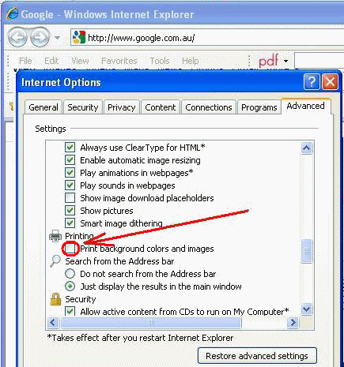
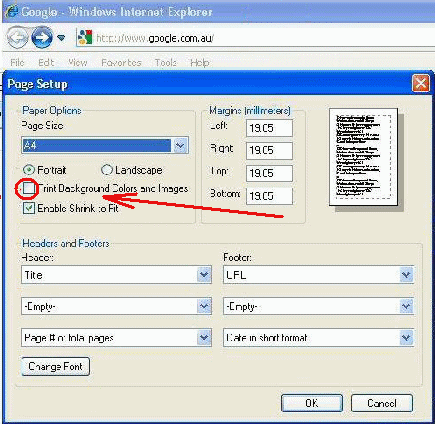

Internet Explorer 7from the menu, select:Tools / Internet Options / Advanced in the Settings sub window, scroll down to the 'Printing' section click on the box for the 'Print background colors and images' Setting close this help window and you can now print the PEBBLE breadboard screen Don't forget to turn off the 'Print background colors and images' when finished with PEBBLE to save printer ink |
 |
Internet Explorer 8two methods exist.(a) the same steps as per IE7 above, or easier (b) from the menu, select: File / Page Setup then click on the box for the 'Print Background Colors and Images' Setting close this help window and you can now print the PEBBLE breadboard screen Don't forget to turn off the 'Print Background Colors and Images' when finished with PEBBLE to save printer ink |
 |
Mozilla Firefox 3.0.11from the menu, select:File / Page Setup then click on the box for the 'Print Background (colors and images)' Setting close this help window and you can now print the PEBBLE breadboard screen Don't forget to turn off the 'Print Background Colors and Images' when finished with PEBBLE to save printer ink |